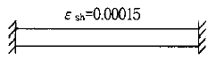
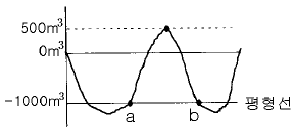
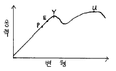
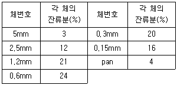
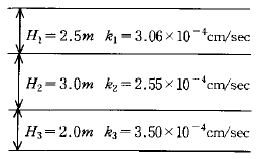
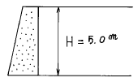
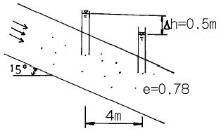
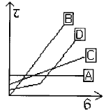

건설재료시험기사 (2003-08-31 기출문제)
1과목: 콘크리트공학
1. 굳지 않은 콘크리트 중의 전 염화물이온량은 원칙적으로 몇 kg/m3이하로 하여야 하는가?
- 0.20㎏/m3
- 0.30㎏/m3
- 0.50㎏/m3
- 0.60㎏/m3
(정답률: 알수없음)

2. 콘크리트 배합시에 잔골재를 넣지 않고 10∼20㎜ 정도의 입도를 갖는 굵은골재만을 넣어 굵은골재의 표면에 시멘트 페이스트만을 피복시켜 성형하여 만든 콘크리트에 대한 설명으로 틀린 것은?
- 기포콘크리트라 부른다.
- 내열성이 우수하다.
- 건조수축이 작다.
- 시공성이 우수하다.
(정답률: 알수없음)
3. 일반적인 콘크리트의 타설방법으로 가장 적절하지 않은 것은?
- 일정 구획내에서 표면이 거의 수평이 되도록 타설한다.
- 슈트를 통해 타설하는 경우 가능한한 자유낙하 높이를 작게 한다.
- 2층이상으로 나누어 타설하는 경우 아래층의 콘크리트가 완전히 굳은 후에 윗층을 타설한다.
- 분할 타설시 한층의 높이는 진동기의 성능을 고려하여 40∼50cm 이하로 하는 것이 좋다.
(정답률: 알수없음)
4. 프리스트레스트 콘크리트에서 프리텐션방식으로 프리스트레싱을 할 때의 재령 28일 콘크리트 압축강도는 최소 얼마 이상이어야 하는가?
- 300 kgf/㎝2
- 400 kgf/㎝2
- 500 kgf/㎝2
- 200 kgf/㎝2
(정답률: 알수없음)
5. 습윤 양생이 곤란할 경우에 비닐유제 등을 콘크리트 표면에 사용하여 양생하는 방법은?
- 기건 양생
- 전기 양생
- 막 양생
- 증기 양생
(정답률: 알수없음)
6. PS 강재에 요구되는 일반적인 성질 중 틀린 것은?
- 릴랙세이숀이 작을 것
- 어느 정도의 피로 강도를 가질 것
- 인장 강도가 작을 것
- 콘크리트와 부착력이 클 것
(정답률: 알수없음)
7. 크리프(creep)에 대한 설명으로 틀린 것은?
- 대기 중에 습도가 높을수록 크리프는 크다.
- 단위 시멘트량이 많을수록 크리프는 크다.
- 작용하는 응력의 크기에 비례한다.
- 장기간에 걸쳐 진행한다.
(정답률: 알수없음)
8. 콘크리트 구조물의 내구성을 향상시키기 위해 유의하여야 할 사항 중 옳지 않은 것은?
- 배합시 단위수량을 될 수 있는 한 적게 사용한다.
- 충분한 피복두께를 확보한다.
- 가능한 한 비중이 작은 골재를 사용한다.
- 콜드죠인트를 만들지 않는다.
(정답률: 알수없음)
9. 다짐 작업시 슬럼프가 작은 된 반죽 콘크리트에 충전성이 좋고 콜드 조인트(cold joint)를 방지하는 효과가 우수한 진동기는?
- 평면식 진동기
- 거푸집 진동기
- 봉형 진동기
- 공기식 진동기
(정답률: 알수없음)
10. 콘크리트 재료 계량의 허용오차에 대한 설명중 옳지 않은 것은?
- 혼화재의 계량 허용오차는 3%이내이다.
- 혼화제의 계량 허용오차는 3%이내이다.
- 골재의 계량 허용오차는 3%이내이다.
- 시멘트의 계량 허용오차는 1%이내이다.
(정답률: 알수없음)
11. 콘크리트에서 알칼리 골재반응에 대한 설명으로 잘못된것은?
- 알칼리 골재반응이 진행되면 콘크리트 구조물에 균열이 생긴다.
- 콘크리트 중 알칼리의 주된 공급원은 골재에 부착된 염분(NaCl)이다.
- 알칼리 골재반응은 포졸란의 사용에 의해 억제된다.
- 알칼리 골재반응이 진행되기 위해서는 반응성골재와 알칼리 및 수분이 필요하다.
(정답률: 알수없음)
12. 콘크리트 배합설계시 굵은골재의 최대치수를 선정하는 기준으로 잘못된 것은?
- 철근콘크리트용 굵은골재의 최대치수는 부재의 최소 치수의 1/5을 초과해서는 안된다.
- 철근콘크리트용 굵은골재의 최대치수는 철근의 최소 순간격의 3/4을 초과해서는 안된다.
- 무근콘크리트의 굵은골재 최대치수는 부재 최소치수의 1/4을 초과해서는 안된다.
- 철근콘크리트의 일반적 구조물의 경우 굵은골재의 최대치수는 40mm로 한다.
(정답률: 알수없음)
13. 품질이 동일한 콘크리트 공시체의 압축강도 시험에 대한 설명으로 옳은 것은? (단, 공시체의 높이 : H, 공시체의 지름 : D)
- 원주형 공시체가 입방체 공시체보다 압축강도가 높다
- H/D비가 작으면 압축강도는 작다.
- H/D비가 일정해도 공시체의 치수가 커지면 압축강도는 작아진다.
- H/D비가 2.0에서 압축강도는 최대값을 나타낸다.
(정답률: 40%)
14. 단위 AE제량이 동일한 경우 콘크리트의 공기량에 관한 설명 중 틀린 것은?
- 단위시멘트량을 증가시키면 공기량은 적게 된다.
- 플라이애시를 혼합하면 공기량은 증가한다.
- 온도가 저하되면 공기량은 증가한다.
- 조강포틀랜드시멘트를 사용하면 보통포틀랜드시멘트를 사용한 경우보다 공기량은 적게 된다.
(정답률: 알수없음)
15. 섬유보강콘크리트에 관한 설명 중 틀린 것은?
- 섬유보강콘크리트는 콘크리트의 인장강도와 균열에 대한 저항성을 높인 콘크리트이다.
- 믹서는 섬유를 콘크리트 속에 균일하게 분산시킬 수 있는 가경식 믹서를 사용하는 것을 원칙으로 한다.
- 시멘트계 복합재료용 섬유는 강섬유, 유리섬유, 탄소 섬유 등의 무기계섬유와 아라미드섬유, 비닐론섬유 등의 유기계섬유로 분류한다.
- 섬유보강콘크리트에 사용되는 섬유는 섬유와 시멘트 결합재 사이의 부착성이 양호하고, 섬유의 인장강도가 커야 한다.
(정답률: 알수없음)
16. 그림과 같이 양단이 구속된 콘크리트보에 건소수축 변형률 εsh=0.00015 만큼 발생할 경우 콘크리트에 생기는 인장응력은? (단, 콘크리트의 탄성계수, Ec=2.1× 105 kgf/cm2 이다.)

- 0 kgf/cm2
- 15.8 kgf/cm2
- 31.5 kgf/cm2
- 63.0 kgf/cm2
(정답률: 알수없음)
17. 물·시멘트비가 40%이고 단위시멘트량 400kg/m3, 시멘트의 비중 3.1, 공기량 2%인 콘크리트의 단위골재량의 절대부피는?
- 0.48m3
- 0.54m3
- 0.69m3
- 0.72m3
(정답률: 알수없음)
18. 실리카흄에 대한 설명으로 맞지 않는 것은?
- 성분 중 실리카(SiO2)가 80~98% 정도를 차지한다.
- 평균 입경은 보통포틀랜드시멘트와 비슷하다.
- 포졸란 반응성이 있다.
- 콘크리트 강도증진에 대한 기여도가 높아 고강도콘크리트 제조에 사용된다.
(정답률: 알수없음)
19. 콘크리트용 골재의 저장과 취급에 관한 다음 설명 중 적절하지 않는 것은?
- 잔골재, 굵은골재 및 종류와 입도가 다른 골재는 각각 구분하여 저장해야 한다.
- 골재의 받아들이기, 저장 및 취급시에는 크고 작은 골재가 분리하지 않도록 주의하고 먼지, 잡물 등이 혼입하지 않도록 해야 한다.
- 겨울에는 빙설의 혼입이나 동결하지 않도록 해야한다.
- 여름에는 일광의 직사를 피할 수 있는 적절한 시설을 마련하고 반드시 기건상태로 관리하여야 한다.
(정답률: 알수없음)
20. 다음 중 콘크리트-폴리머복합체의 종류가 아닌 것은?
- 폴리머 콘크리트
- 폴리머 시멘트 콘크리트
- 폴리머 함침 콘크리트
- 폴리머 압축 콘크리트
(정답률: 알수없음)
2과목: 건설시공 및 관리
21. 그림의 토적곡선의 a-b 구간에서 발생한 절토량을 인접한500(m2) 면적지역에 다짐상태로 성토시 성토높이를 구하면 약 몇 m 인가? (단, L=1.2, C=0.9)

- 1.7m
- 2.7m
- 3.8m
- 4.8m
(정답률: 알수없음)
22. 콘크리트의 압축강도시험에서 10개의 공시체를 측정한 평균값중 압축강도가 250㎏f/㎝2,표준편차가 10㎏f/㎝2이었다. 이 결과에서 변동계수는?
- 4%
- 8%
- 10%
- 15%
(정답률: 알수없음)
23. 불도우져 뒤에 날을 달아 유압으로 지반에 날을 박고 끌어당기면서 불도우져를 전진시켜 암석을 굴착하는 공법은 어느 것인가?
- 리퍼공법
- 번컷
- 스테밍공법
- OD공법
(정답률: 알수없음)
24. 웰 포인트(well point)공법으로 강제배수시 보통 point와 point의 간격으로 적당한 것은?
- 1∼1.5m
- 3∼4.5m
- 5∼7.5m
- 8∼10.5m
(정답률: 알수없음)
25. TBM(Tunnel Boring Machine)공법을 이용하여 암석을 굴착하여 터널단면을 만들려고 한다. TBM 공법의 단점이 아닌것은?
- 설비투자액이 고가이므로 초기 투자비가 많이 든다.
- 본바닥 변화에 대하여 적응이 곤란하다.
- 지반에 따라 적용범위에 제약을 받는다.
- lining 두께가 두꺼워야 한다.
(정답률: 알수없음)
26. 다음 기계중 가스관,수도관,암거를 묻기 위해서 파는 기계로 가장 알맞은 것은?
- Back hoe
- bucket 굴착기
- trencher
- ripper
(정답률: 알수없음)
27. 아스팔트 포장설계에 이용되는 최적아스팔트 함량을 결정하기 위해 마샬안정도시험을 수행한다. 다음중 최적아스팔트 함량 결정에 이용되지 않는 것은?
- 공극률
- 포화도
- 흐름치
- 회복탄성계수
(정답률: 알수없음)
28. 아스팔트 재료를 중유버너로 가열 용해하여 주행하면서 아스팔트를 노면에 일정한 폭으로 균일하게 살포하는 기계를 무엇이라 하는가?
- 아스팔트 디스트리뷰우터 (asphalt distributor)
- 아스팔트 스프레이어 (asphalt sprayer)
- 아스팔트 믹싱 플랜트 (asphalt mixing plant)
- 아스팔트 피니셔 (asphalt finisher)
(정답률: 알수없음)
29. 아스팔트 포장의 시공에 앞서 실시하는 시험포장의 결과로 얻어지는 사항과 관계가 없는 것은?
- 혼합물의 현장배합 입도 및 아스팔트 함량의 결정
- 플랜트에서의 작업표준 및 관리목표의 설정
- 시공관리 목표의 설정
- 포장두께의 결정
(정답률: 알수없음)
30. 성토재료와 다짐기계에 관한 다음 사항 중 틀린 것은?
- 모래 또는 사질토에는 진동 로울러가 최적이다.
- 함수비가 적은 점질토 또는 사질토에는 타이어 로울러가 최적이다.
- 고함수비의 점질토에는 습지용 불도저가 최적이다.
- 잡석, 사질토(균일한 입경) 등에는 탬핑 로울러가 최적이다.
(정답률: 알수없음)
31. 대폭파 또는 수중폭파를 동시에 실시하기 위하여 뇌관대신 사용하는 것으로, 흑색화약이 아닌 면화약을 마사, 면사, 종이 등으로 감아 도료로 피복하여 사용하며, 폭파속도는 3000∼6000m/sec인 이것은 무엇인가?
- 도화선
- 도폭선
- 기폭약
- 분화약
(정답률: 알수없음)
32. 점성토에서 발생하는 히빙의 방지대책으로 틀린 것은?
- 널말뚝의 근입 깊이를 짧게 한다.
- 표토를 제거하거나 배면의 배수 처리로 하중을 작게 한다.
- 연약 지반을 개량한다.
- 부분굴착 및 트렌치 컷 공법을 적용한다.
(정답률: 알수없음)
33. 해저터널의 굴착에 특히 유효한 shield공법의 적당한 지질은?
- 풍화암
- 연암
- 보통흙
- 연약지반
(정답률: 알수없음)
34. 공사일수를 다음과 같이 3점 시간 추정법에 의해 산정할 경우 적절한 공사 일수는? (낙관 일수는 6일, 정상일수는 8일 ,비관일수는 10일이다.)
- 6일
- 7일
- 8일
- 9일
(정답률: 알수없음)
35. 교각의 기초와 같은 깊은 수중의 기초 터파기에는 다음 어느 굴착기계가 가장 적당한가?
- 파워 셔블 (Power shovel)
- 백호우(Back hoe)
- 드래그 라인(Drag line)
- 크램 쉘(Clam shell)
(정답률: 알수없음)
36. 암거의 배열방식중 1개의 간선집수거 또는 집수지거로 될수 있으며 많은 흡수거를 합류시키게 배치한 방식은?
- 차단식
- 자연식
- 빗식
- 어골식
(정답률: 알수없음)
37. 딥퍼의 용량 0.6m3, 흙의 체적변화계수 1.2, 기계의 능률계수 0.9, 딥퍼계수 0.85, 싸이클타임 25sec인 파워 쇼벨의 1시간당 추정표준 굴착 작업량은 얼마인가?
- 52.45m3/h
- 55.08m3/h
- 64.84m3/h
- 79.32m3/h
(정답률: 알수없음)
38. 다음 중 깊은 기초의 종류가 아닌 것은?
- 전면 기초
- 말뚝 기초
- 피어 기초
- 케이슨 기초
(정답률: 알수없음)
39. 댐 공사시 가체철공 중 가장 간단한 구조형식으로 얕은 수심에는 유리 하지만 수심에 비하여 넓은 부지, 상당한 양의 토사가 필요한 가체절공은 무엇인가?
- 간이 가체절공
- 셀식 가체절공
- 흙댐식 가체절공
- 한겹 흙물막이 가체절공
(정답률: 알수없음)
40. 연약층이 두껍고 성토중에 기초지반의 강도증가를 기대할 수 없는 지반상에 단기간으로 성토하려 할때의 공법으로 다음중에서 가장 적당한 것은?
- 서서히 성토하여 간극수압을 저하시켜 전단저항을 증대시킨다.
- 말뚝박기등의 비탈막기공을 시공하여 성토부를 보호한다.
- Sand mat 공이든지 섶깔기공등에 의하여 위의 하중을 넓게 분포시킨다.
- 좋은 흙으로 성토를 계속하여 연약토를 측방에 충분히 밀어 내어 지반을 개량한다.
(정답률: 알수없음)
3과목: 건설재료 및 시험
41. 아스팔트의 성질에 대한 설명 중 틀린 것은?
- 아스팔트의 비중은 침입도가 작을수록 작다.
- 아스팔트의 비중은 온도가 상승할수록 저하된다.
- 아스팔트는 온도에 따라 컨시스턴시가 현저하게 변화된다.
- 아스팔트의 강성은 온도가 높을수록 침입도가 클수록 작다.
(정답률: 알수없음)
42. 습윤상태의 모래 100g이 있다. 모래의 함수상태별 질량을 측정한 결과 표면건조 포화상태일 때 97g, 공기중 건조상태일 때 96g, 절대 건조상태(로 건조상태)일 때 95g이었다. 이때 표면수량과 흡수량은 얼마인가?
- 표면수량 : 1.0%, 흡수량 : 5.3%
- 표면수량 : 2.1%, 흡수량 : 3.1%
- 표면수량 : 3.1%, 흡수량 : 2.1%
- 표면수량 : 5.3%, 흡수량 : 1.0%
(정답률: 알수없음)
43. 경량골재 및 중량골재에 관한 설명중 틀린 것은?
- 천연 경량골재는 일반적으로 약하고 모양도 나쁘므로 고강도를 요구하는 콘크리트용으로는 부적당하다.
- 인공 경량골재는 공장에서 제조되기 때문에 일반적으로 깨끗하고 적당한 입도를 가지며, 품질의 변동이 적다.
- 인공 경량골재는 흡수량이 비교적 적기 때문에 콘크리트 배합에 건조한 상태로 사용해도 좋다.
- 중량 골재는 원자로, 방사선등의 차폐효과를 높이기 위한 고밀도 콘크리트용으로 많이 사용된다.
(정답률: 알수없음)
44. 콘크리트용 혼화제인 고성능감수제에 대한 설명 중 틀린것은?
- 고성능감수제는 감수제와 비교해서 시멘트 입자 분산 능력이 우수하여 단위수량을 20∼30％정도 크게 감소시킬 수 있다.
- 고성능감수제는 물-시멘트비 감소와 콘크리트의 고강도화를 주목적으로 사용되는 혼화제이다.
- 고성능감수제의 첨가량이 증가할수록 워커빌리티는 증가되지만 과도하게 사용하면 재료분리가 발생한다.
- 고성능감수제를 사용한 콘크리트는 보통콘크리트와 비교해서 경과시간에 따른 슬럼프 손실이 작다.
(정답률: 알수없음)
45. 시멘트의 분말도(紛末度)에 대한 설명 중 옳지 않은 것은?
- 분말도 시험방법에는 표준체(45μm)에 의한 방법과 비표면적을 구하는 블레인방법 등이 있다.
- 비표면적이란 시멘트 1g의 입자의 전표면적을 ㎝2로 나타낸 것으로 시멘트의 분말도를 나타낸다.
- KS L 5201에 규정된 포틀랜드 시멘트의 분말도는 2,000㎝2/g 이상이다.
- 시멘트의 품질이 일정한 경우 분말도가 클수록 수화작용이 촉진되므로 응결이 빠르며 초기강도가 높아진다.
(정답률: 알수없음)
46. 콘크리트 혼화재료로서 사용량이 비교적 많아 콘크리트 배합설계에 고려해야 하는 것은?
- AE제
- 응결,경화촉진제
- 포졸란(Pozzolan)
- 시멘트분산제
(정답률: 알수없음)
47. 포틀랜드 시멘트가 풍화하였을때 일어나는 성질의 변화에 관한 다음의 설명중 옳지 않은 것은?
- 초기강도가 저하한다.
- 비중이 증가한다.
- 비표면적이 감소한다.
- 일반적으로 응결 시간은 늦어지는 경향이 있다.
(정답률: 알수없음)
48. 니트로 글리세린을 20%정도 함유하고 있으며 찐득한 엿 형태의 것으로 폭약중 폭발력이 가장 강하고 수중에서도 사용이 가능한 폭약은?
- 카알릿
- 함수폭약
- 니트로글리세린
- 교질다이너마이트
(정답률: 알수없음)
49. 목재에 관한 다음 설명중 옳지 않은 것은?
- 제재후의 심재는 변재보다 썩기 쉽다.
- 벌목시기는 가을에서 겨울에 걸친 기간이 가장 적당하다.
- 목재는 세포막 중에 스며든 결합수가 감소하면 수축 변형한다.
- 목재의 강도는 절대 건조일 때 최대가 된다.
(정답률: 알수없음)
50. 중용열 포틀랜드 시멘트에 관한 특성 중 옳지 않은 것은?
- 수화열이 보통포틀랜드 시멘트 보다 적다.
- 건조수축은 포틀랜드 시멘트 중에서 가장 적다.
- 화학저항성이 크고 내산성이 우수하다.
- 조기강도는 보통 포틀랜드 시멘트에 비해 크다.
(정답률: 알수없음)
51. 도로의 노체에 대한 건설공사 품질시험 방법이 아닌것은?
- 현장밀도시험
- 평판재하시험
- 프루프롤링시험
- 다짐시험
(정답률: 알수없음)
52. 커트백 아스팔트의 특성에 대한 설명 중 틀린 것은?
- 커트백 아스팔트는 비교적 연한 스트레이트 아스팔트에 적당한 휘발성 용제를 가하여 유동성을 좋게 한 것이다.
- 커트백 아스팔트는 사용하는 용제의 양과 질에 따라 제품의 성질이 크게 좌우된다.
- 커트백 아스팔트의 양생시간은 휘발성이 큰 용제일수록, 그리고 용제량이 적을수록 길게한다.
- 커트백 아스팔트는 점도를 일시적으로 저하시킨 것으로 상온시공이 가능하다.
(정답률: 알수없음)
53. 건설공사품질시험기준에 따른 콘크리트의 포장에서 평탄성의 시험빈도는?
- 종방향-차로마다 전구간, 횡방향-100미터마다
- 종방향-100미터마다, 횡방향-차로마다 전구간
- 종방향-차로마다 전구간, 횡방향-200미터마다
- 종방향-200미터마다, 횡방향-차로마다 전구간
(정답률: 알수없음)
54. 다음 그림은 강의 응력과 변형의 관계를 표시한 곡선이다. 외력을 제거해도 변형없이 원래상태대로 돌아가는 응력의 한계점은 다음중 어느것인가?

- P : 비례한도
- E : 탄성한도
- Y : 항복점
- U : 극한강도
(정답률: 알수없음)
55. 혼합시멘트 및 특수시멘트에 관한 설명 중 틀린 것은?
- 고로 시멘트는 초기강도는 작으나 장기강도는 포틀랜드 시멘트와 거의 비슷하거나 약간 크다.
- 플라이애시 시멘트는 해수(海水)에 대한 저항성이 크고, 수밀성이 좋아 수리구조물에 유리하다.
- 알루미나 시멘트는 조기강도가 적고, 발열량이 적기 때문에 여름공사(暑中工事)에 적합하다.
- 초속경(超速硬) 시멘트는 응결시간이 짧고 경화시 발열이 큰 특징을 가지고 있다.
(정답률: 알수없음)
56. 25℃ 기준 보통 아스팔트의 개략적인 비중값은?
- 1.0 ∼ 1.10
- 1.10 ∼ 1.20
- 1.20 ∼ 1.30
- 1.30 ∼ 1.45
(정답률: 알수없음)
57. 화약류 취급시의 주의점을 설명한 것중 옳지 않은 것은?
- 다이나마이트는 일광의 직사를 피하고 화기에 접근시키지 말아야 한다.
- 운반시 충격을 받지 않도록 주의 하여야 한다.
- 뇌관과 폭약은 사용에 편리하도록 같이 보관함이 좋다.
- 장시간 보관시는 온도나 습도에 의해 변질되지 않도록 해야 한다.
(정답률: 알수없음)
58. 골재에서 조립율(F.M)이 크다는 것은 다음중 어느 것을 의미하는가?
- 골재의 입도분포가 양호하다.
- 골재의 모양이 둥글다.
- 골재가 강하고 비중이 크다.
- 골재 입자의 크기가 크다.
(정답률: 알수없음)
59. 다음은 잔골재의 체가름 시험에 대한 결과이다. 조립율은 얼마인가? (단, 잔골재는 10mm체를 모두 통과하였다.)

- 2.60
- 2.70
- 2.80
- 2.90
(정답률: 알수없음)
60. 다음 중 플라스틱에 대한 설명으로 잘못된 것은?
- 석탄, 석유가 주 원료이다.
- 일반적으로 목재보다 가벼우며, 내구성과 내수성이 크다.
- 어떤 온도의 범위에서 가소성을 가진 물질이라는 뜻이다.
- 열이나 약품에 의해 재용해-용융 되는 것은 열가소성 플라스틱이다.
(정답률: 알수없음)
4과목: 토질 및 기초
61. 점착력이 0.1㎏/㎝2, 내부마찰각이 30° 인 흙에 수직응력 20㎏/㎝2을 가할 경우 전단응력은?
- 20.1㎏/㎝2
- 6.76㎏/㎝2
- 1.16㎏/㎝2
- 11.65㎏/㎝2
(정답률: 알수없음)
62. 그림과 같이 3층으로 되어 있는 성층토의 수평방향의 평균투수계수는?

- 2.97×10-4cm/sec
- 3.04×10-4cm/sec
- 6.04×10-4cm/sec
- 4.04×10-4cm/sec
(정답률: 알수없음)
63. 어느 모래층의 간극률이 0.35, 비중이 2.66이다. 이 모래의 Quick Sand에 대한 한계동수구배는 얼마인가?
- 1.14
- 1.08
- 1.0
- 0.99
(정답률: 알수없음)
64. 흙의 다짐곡선은 흙의 종류나 입도 및 다짐에너지 등의 영향으로 변한다. 그 일반적 다짐곡선 변화내용과 부합되지 않는 것은?
- 세립토가 많을수록 최적함수비는 증가한다
- 최대건조단위중량이 큰 흙일수록 최적함수비는 큰것이 보통이다
- 점토질 흙은 최대건조단위중량이 작고 사질토는 크다
- 다짐에너지가 클수록 최적함수비는 감소한다
(정답률: 알수없음)
65. C=0, ø=30° , γt=1.8t/m3인 사질토 지반위에 근입깊이 1.5m의 정방형 기초가 놓여있다. 이 때 이 기초의 도심에 150t의 하중이 작용하고 지하수위 영향은 없다고 본다. 이 기초의 가장 경제적인 폭 B의 값은? (단, Terzaghi의 지지력공식을 이용하고 안전율은 Fs =3, 형상계수 α =1.3, β =0.4, ø=30° 일 때 지지력계수는 Nc=37, Nq=23, Nr=20 이다.)
- 3.8m
- 3.4m
- 2.9m
- 2.2m
(정답률: 알수없음)
66. 그림과 같은 옹벽에 작용하는 전주동 토압은? (단, 뒷채움 흙의 단위중량은 1.8t/m3, 내부마찰각은 30° 이고, Rankine의 토압론을 적용한다.)

- 7.5 t/m
- 8.5 t/m
- 9.5 t/m
- 10.5 t/m
(정답률: 알수없음)
67. 어떤 흙시료의 비중이 2.50이고, 흙 중의 물의 무게가 100g이며, 순 흙입자의 부피가 200㎝3일 때 이 시료의 함수비는 얼마인가?
- 10%
- 20%
- 30%
- 40%
(정답률: 알수없음)
68. 아래 그림에서 투수계수 K=4.8×10-3㎝/sec 일 때 Darcy 유출속도 v 와 실제 물의 속도(침투속도)vs는?

- v = 3.4 × 10-4㎝/sec, vs = 5.6 × 10-4㎝/sec
- v = 3.4 × 10-4㎝/sec, vs = 9.4 × 10-4㎝/sec
- v = 5.8 × 10-4㎝/sec, vs = 10.8 × 10-4㎝/sec
- v = 5.8 × 10-4㎝/sec, vs = 13.2 × 10-4㎝/sec
(정답률: 알수없음)
69. 말뚝에 관한 다음 설명 중 옳은 것은?
- 말뚝에 부(負)의 주면마찰력이 일어나면 지지력은 증가한다.
- 무리말뚝(群抗)에 있어서 각 개의 말뚝이 발휘하는 지지력은 단독말뚝보다 크다.
- 정역학적 지지력 공식에 의하면 지지력은 선단저항력과 주면마찰력의 합과 같다.
- 일반적으로 지반조건으로 보아 말뚝끝이 암반에 도달하면 마찰지지말뚝, 연약점성토에 도달하면 선단지지 말뚝으로 구분한다.
(정답률: 알수없음)
70. 흙시료 채취에 관한 설명중 옳지 않은 것은?
- Post Hole형의 Auger는 비교적 연약한 흙을 Boring하는데 적합하다.
- 비교적 단단한 흙에는 Screw형의 Auger가 적합하다.
- Auger Boring은 흐트러지지 않은 시료를 채취 하는데 적합하다.
- 깊은 토층에서 시료를 채취 할때는 보통 기계 Boring을 한다.
(정답률: 알수없음)
71. 사면파괴가 일어날 수 있는 원인에 대한 설명중 적절하지 못한 것은?
- 흙중의 수분의 증가
- 굴착에 따른 구속력의 감소
- 과잉 간극수압의 감소
- 지진에 의한 수평방향력의 증가
(정답률: 알수없음)
72. 표준관입시험(SPT)을 할때 처음 15㎝ 관입에 요하는 N값은 제외하고 그 후 30㎝ 관입에 요하는 타격수로 N값을 구한다. 그 이유로 가장 타당한 것은?
- 정확히 30㎝를 관입시키기가 어려워서 15㎝ 관입에 요하는 N값을 제외한다.
- 보링구멍 밑면 흙이 보링에 의하여 흐트러져 15㎝ 관입후부터 N값을 측정한다.
- 관입봉의 길이가 정확히 45㎝이므로 이에 맞도록 관입시키기 위함이다.
- 흙은 보통 15㎝ 밑부터 그 흙의 성질을 가장 잘 나타낸다.
(정답률: 알수없음)
73. 어떤 흙의 입경가적곡선에서 D10=0.⑤mm, D30=0.09mm, D60=0.15mm이었다. 균등계수 Cu와 곡률계수 Cg의 값은?
- Cu=3.0, Cg=1.08
- Cu=3.5, Cg=2.08
- Cu=1.7, Cg=2.45
- Cu=2.4, Cg=1.82
(정답률: 알수없음)
74. 단면배수를 실시한 압밀점토 시료의 두께가 2cm이었다. 임의 하중 증가에 의하여 50%압밀에 소요된 시간이 20분20초이었다고 할 때 두께가 2m인 양면 배수 현장 점토층의 50%압밀에 소요되는 시간은 약 며칠인가?
- 35일
- 141일
- 250일
- 560일
(정답률: 알수없음)
75. 모래시료에 대해서 압밀배수 삼축압축시험을 실시하였다. 초기 단계에서 구속응력(σ3)은 100㎏/㎝2이고, 전단파괴시에 작용된 축차응력(σdf)은 200㎏/㎝2이었다. 이와 같은 모래시료의 내부마찰각(ø) 및 파괴면에 작용하는 전단응력(τf)의 크기는?
- ø = 30° , τf = 115.47㎏/㎝2
- ø = 40° , τf = 115.47㎏/㎝2
- ø = 30° , τf = 86.60㎏/㎝2
- ø = 40° , τf = 86.60㎏/㎝2
(정답률: 알수없음)
76. 비중이 2.67, 함수비 35%이며 두께 10m인 포화점토층이 압밀후에 함수비가 25%로 되었다면 이 토층 높이의 변화량은 얼마인가?
- 113㎝
- 128㎝
- 135㎝
- 155㎝
(정답률: 알수없음)
77. 전체 시추코아 길이가 150cm 이고 이중 회수된 코아 길이의 합이 80cm 이었으며, 10cm 이상인 코아 길이의 합이 70cm 였을 때 암질의 상태는?
- 매우불량(Very Poor)
- 불량(Poor)
- 보통(Fair)
- 양호(Good)
(정답률: 알수없음)
78. 다음의 연약지반개량공법에서 일시적인 개량공법은 어느것인가?
- well point 공법
- 치환공법
- paper drain 공법
- sand drain 공법
(정답률: 알수없음)
79. 지름 d = 20㎝인 나무말뚝을 25본 박아서 기초 상판을 지지하고 있다. 말뚝의 배치를 5열로 하고 각열은 등간격으로 5본씩 박혀있다. 말뚝의 중심간격 S = 1m이고 1본의 말뚝이 단독으로 10t의 지지력을 가졌다고 하면 이 무리 말뚝은 전체로 얼마의 하중을 견딜수 있는가? (단, Converse - Labbarre식을 사용한다. )
- 100t
- 200t
- 300t
- 400t
(정답률: 알수없음)
80. 다음 그림은 흙의 종류에 따른 전단강도를 τ-σ 평면에 도시한 것이다. 설명이 잘못된 것은?

- A는 포화된 점성토 지반의 전단강도를 나타낸 것이다.
- B는 모래등 사질토에 대한 전단강도를 나타낸 것이다.
- C는 일반적인 흙의 전단강도를 도시한 것이다.
- D는 정규 압밀된 흙의 전단강도를 나타낸 것이다.
(정답률: 알수없음)